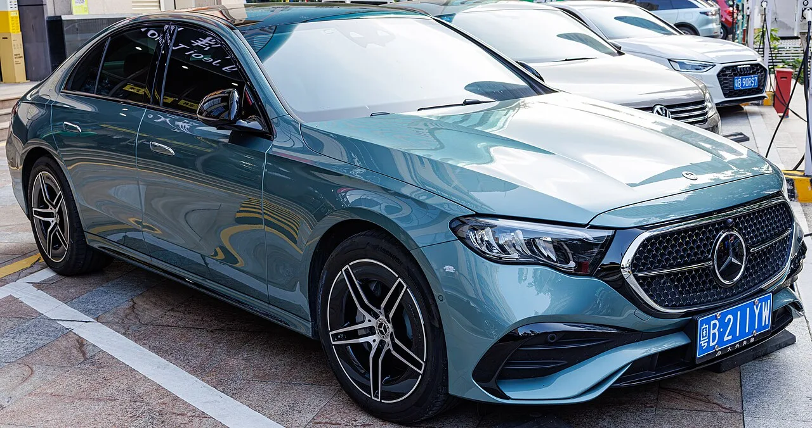
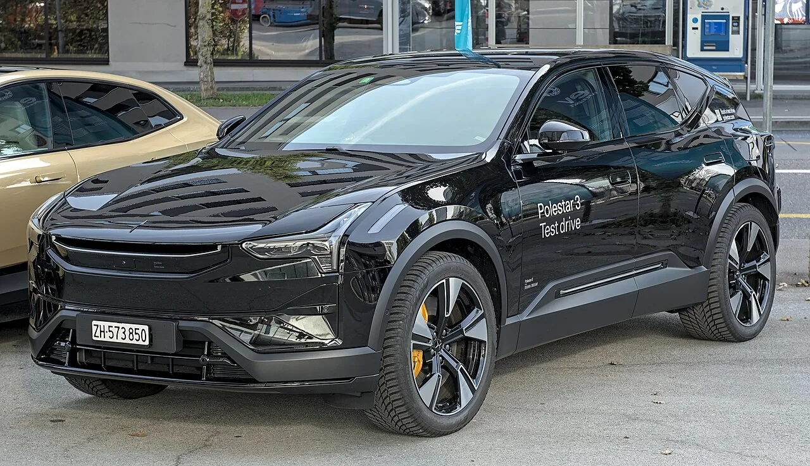

▲ 벤츠 E클래스. 8월 구매 시 보증이 최대 4년·13만km로 늘어난다
8월 수입차 프로모션의 성격이 예년과 조금 다릅니다. 차값을 깎는 대신 보증 기간을 늘리는 쪽으로 무게가 옮겨갔습니다.
벤츠·폴스타·BMW·MINI 네 브랜드가 각각 다른 방식으로 같은 방향을 잡았습니다.
다만 조건을 확인하지 않으면 체감이 크게 달라지는 항목이 섞여 있습니다. 브랜드별로 나눠 정리하겠습니다.
1. 벤츠 — E클래스 보증 1년·3만km 추가
메르세데스-벤츠 코리아가 2026년형 E클래스 구매 고객에게 보증 연장 혜택을 붙였습니다.
기존 보증은 3년 또는 10만km(선도래 기준)입니다. 여기에 1년 또는 3만km가 더해져 최대 4년·13만km가 됩니다.
이 프로모션에서 가장 중요한 대목은 별도 가입비나 추가 비용이 없다는 점입니다. 8월 중 구매하면 자동으로 적용됩니다. 유상 보증 상품을 사는 것과는 성격이 다릅니다.
보장 범위는 기본 보증과 동일합니다. 엔진·변속기·차체·일반 부품이 포함되고, 소모품과 외관 손상은 제외됩니다. 전국 공식 서비스센터에서 받을 수 있습니다.
⚠️ 벤츠 보증 연장에서 놓치기 쉬운 제외 조건
- 전시차·업무용 차량·단기 렌터카는 대상에서 제외
- 다른 보증 상품으로 교환하거나 환불받을 수 없음
- 차량 검사비 환급은 포함되지 않음

▲ 보장 범위는 기본 보증과 같다. 소모품과 외관 손상은 제외된다
2. 폴스타 — 승계되는 연장보증
폴스타는 유상 연장보증 프로그램을 새로 내놨습니다. 두 단계로 나뉩니다.
| 등급 | 연장 기간 | 주행거리 |
|---|---|---|
| Plus | 1년 | 2만km |
| Performance | 2년 | 4만km |
기본 보증이 끝난 시점부터 위 기간만큼 더 이어지는 방식이고, 보장 범위는 신차 기본 보증과 동일합니다.
벤츠와 결정적으로 다른 점이 하나 있습니다. 차량을 팔면 남은 보증이 다음 소유자에게 그대로 넘어간다는 것입니다. 중고차로 내놓을 때 잔여 보증이 값에 반영될 수 있는 구조입니다.
서비스는 전국 38개 폴스타 서비스 거점(볼보 공식 서비스센터)에서 받을 수 있고, 보증 수리 시 픽업&딜리버리 서비스가 포함됩니다.
9월 11일까지 가입하는 고객에게는 런칭 혜택이 붙습니다. 사고 시 자기부담금을 건당 최대 50만 원까지 보상해주는데, Plus는 연 3회, Performance는 2년간 6회까지입니다. 여행 상품권·충전 크레딧 추첨도 함께 진행합니다.

▲ 폴스타 연장보증은 차량 매각 시 다음 소유자에게 승계된다
3. BMW·MINI — 7주간의 서비스 캠페인
BMW 그룹 코리아는 8월 18일부터 10월 2일까지 약 7주간 무상점검 캠페인을 엽니다.
대상은 소모품 무상 교환 프로그램인 BSI(BMW Service Inclusive)와 MSI(MINI Service Inclusive)가 만료된 고객입니다. 즉 보증·서비스 패키지가 끝나 자비로 정비하기 시작한 차주를 겨냥한 캠페인입니다.
무상점검 자체는 BMW·MINI 전 차종이 받을 수 있고, 유상 수리에 할인이 붙습니다.
🔧 BMW·MINI 서비스 캠페인 할인 내역
- 소모성 부품 및 공임 20% 할인 — 오일류, 필터류, 브레이크 패드·디스크, 점화플러그, 와이퍼, 배터리, 냉각수 등 오리지널 부품
- 차량 연식에 따라 최대 10% 추가 할인
- 오리지널 액세서리·라이프스타일 제품 20%
- 타이어 10%
- AS 결제 200만 원 이상 시 플로팅 허브캡 증정
- ServiceCare+ 가입 고객에 1만 원 상당 주유권
연식 추가 할인까지 겹치면 소모품 교체 비용이 최대 30% 가까이 내려갑니다. 오래 탄 차일수록 유리한 구조입니다.
4. MINI 36개월 무이자 — 조건을 봐야 한다
MINI 코리아는 내연기관 전 모델에 36개월 무이자 할부를 붙였습니다. 8월 한 달간입니다.
여기서 반드시 확인해야 할 조건이 있습니다. 차량 가격의 50%를 선납해야 합니다. 나머지 절반을 36개월에 걸쳐 이자 없이 나눠 내는 방식입니다.
즉 "무이자"만 보고 접근하면 실제 부담과 차이가 큽니다. 4,000만 원짜리 차라면 계약 시점에 2,000만 원이 필요합니다.
리스·렌트를 선택하는 경우에는 다른 지원이 들어갑니다. 쿠퍼 3-도어는 최초 5개월간 월 50만 원, 그 외 모델은 월 20만 원의 납입금 지원입니다.
여기에 컨버터블·컨트리맨 구매 고객에게는 보증 1년 연장이 추가되고, 기존 MINI·BMW 고객이 재구매하면 신차 가격의 최대 4%를 할인받습니다.

▲ MINI 쿠퍼 3-도어. 리스·렌트 선택 시 최초 5개월간 월 50만 원이 지원된다
5. 왜 할인이 아니라 보증인가
네 브랜드가 비슷한 시기에 가격 인하가 아닌 보증·서비스를 꺼낸 데는 이유가 있습니다.
차값을 직접 깎으면 중고차 잔존가치가 함께 내려갑니다. 기존 고객이 보유한 차의 가치까지 떨어뜨리는 부작용이 있습니다. 최근 수입 세단의 중고가 하락이 이어지는 상황에서는 부담이 큰 선택입니다.
반면 보증 연장은 잔존가치를 오히려 방어합니다. 특히 폴스타처럼 승계가 되는 구조라면 중고차로 넘어갈 때 값에 반영될 여지가 있습니다.
유지비 부담이 실제 구매 결정에서 차지하는 비중이 커진 것도 배경입니다. 수입차는 보증 만료 이후 정비비가 급격히 오르는 구조라, 그 구간을 늦춰주는 혜택이 실질적으로 다가옵니다.

▲ 수입차는 보증 만료 후 정비비 부담이 커진다. 캠페인이 그 구간을 겨냥했다
6. 정리 — 브랜드별 한 줄
벤츠 — 2026년형 E클래스를 8월에 산다면 별도 비용 없이 보증이 최대 4년·13만km가 됩니다. 전시차·업무용은 제외입니다.
폴스타 — 연장보증은 유상이지만 승계가 됩니다. 9월 11일까지 가입하면 사고 자기부담금 보상이 붙습니다.
BMW·MINI — 8월 18일부터 7주간, BSI·MSI가 끝난 차주라면 무상점검과 부품 20%(+연식별 최대 10%) 할인을 받을 수 있습니다.
MINI 금융 — 36개월 무이자는 차값의 50% 선납이 전제입니다. 이 조건을 빼고 계산하면 안 됩니다.